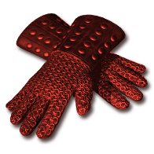
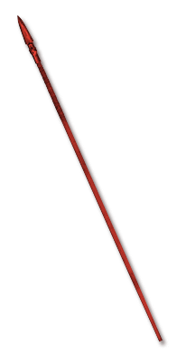

Each point adds one attack to a supported sequence or one shot to each sentry, up to +2 from items. Fend gains targets per sweep.
+2 attacks or shots from items+# Attacks per Sequence and Shots per SentryApplies to the supported skills below.
10 supported skills
Amazon
Paladin
Druid
Assassin
Warlock
Get this effect
Runewords
Tripwire
Xeth → Io → Ort
3 sockets · Hand to Hand
+1 Attacks per Sequence and Shots per SentryRequired level 55Cadence
Ral → Thul → Tal
3 sockets · Any melee weapon
+1 Attacks per Sequence and Shots per SentryRequired level 23Anthem
Shael → Ko → Lem
3 sockets · Sword / Scepter
+1 Attacks per Sequence and Shots per SentryRequired level 43Litany
Myr → Ohm → Ber
3 sockets · Sword / Scepter / Spear
+2 Attacks per Sequence and Shots per SentryRequired level 63Magic & rare modifiers


of Onslaught
Magic & rare suffix
+1 Attacks per Sequence and Shots per Sentry- Weapon
- Gloves
Excludes: Wand / Staff / Orb
Affix level 30 · Required level 25Equipment

Trapwright's Grips
Sharkskin Gloves
+1 Attacks per Sequence and Shots per SentryRequired level 30
Ardent Gauntlets
Heavy Bracers
+1 Attacks per Sequence and Shots per SentryRequired level 38
Ninefold Fang
War Pike
+2 Attacks per Sequence and Shots per SentryRequired level 86
Hratli's Steady Hands
Vambraces
+1 Attacks per Sequence and Shots per SentryRequired level 74Oil & gem crafts


Black Oil
+ Perfect Sapphire
- Gloves / Bow / Crossbow / Hand to Hand / Knife / Axe / Mace / Club / Hammer / Sword / Spear / Polearm
- +1 Attacks per Sequence and Shots per Sentry